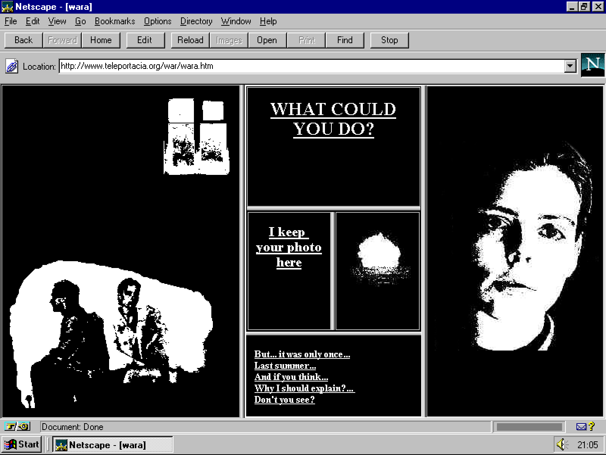
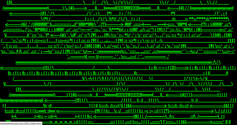
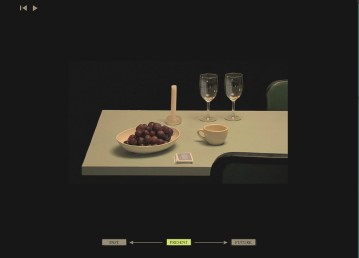
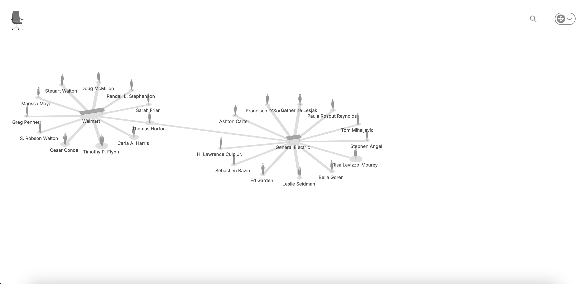

The idea and purpose behind my exhibition is I want to showcase examples and descriptions of net arts that have a sense of storytelling behind the art piece. There are many storytelling net arts out in the internet but I want to be able to showcase ones that are not only my favorite, but ones that showcase different time eras as all three net arts are varying in when they were made. I also want to showcase net arts that are more on the interactive side, as I feel like interactivity between the user and the art, forms a better connection especially for storytelling.